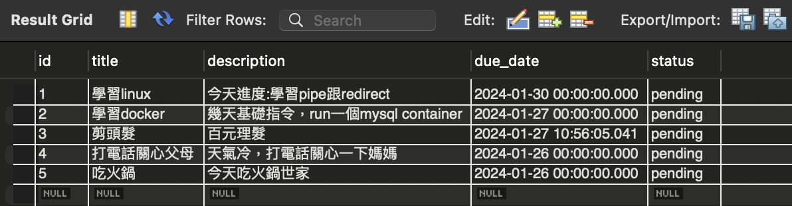
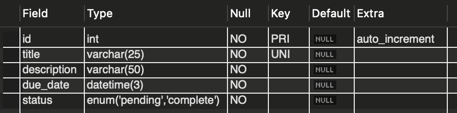
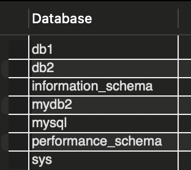
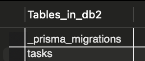
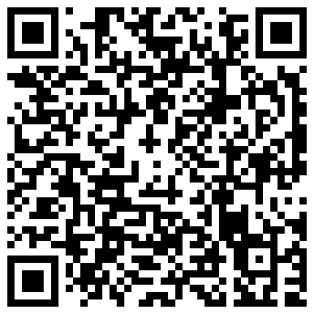
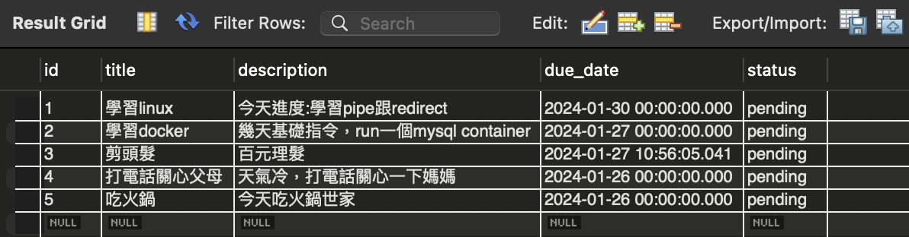
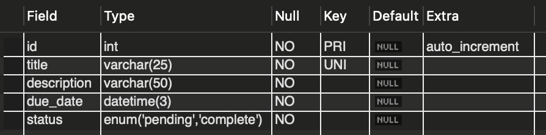
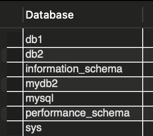
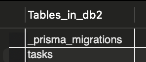
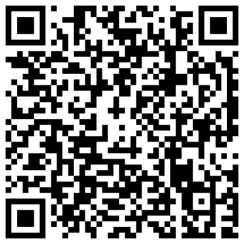

個人簡介
24歲男性，病房護理師兩年資歷，112/7月在youtube接觸到C語言，覺得很有趣繼續學習，發現轉職網頁後端工程師的可能性 ，迫切的惡補計算機領域知識，利用所有非上班時間自學程式,接觸過HTML/CSS/Javascirpt/Typescript/Node js/Express/mySQL/Mongodb/Prisma/ Linux/Docker/Git但熟練度還需加強，希望今年四月以前有機會到Ｗehelp或是App work school學習，對於寫程式有強烈的熱忱，希望能夠盡快成功轉職後端軟體工程師!!
為了成為軟體工程師，做過什麼努力？若有具體作品請分享給我們。
初期自學方向混亂但很努力，與女友去小琉球遊玩，回到民宿就開始學習台大計算機概論開放課程，在職輪班期間常常寫code到凌晨一兩點，不想浪費任何一分鐘的時間，
購買洪維恩老師C語言教學手冊地教學毯式學習，112/8/30曾至appwork
school面試，但是第二關面試被刷掉了(只有提供JavaScript與Python題目，我當時只會用C寫巢狀迴圈)
，雖然後來有候補上IOS班，但我拒絕了，112年11月在托特(交換技能app)上找到現役後端軟工協助指引方向，確定學習方向為Node/Express，每週固定進度輔助教學，以Udemy
Wilson Ren
網頁全端開發課程為主自學，最初八人，最後只剩兩人(包含我)，最後能夠做出一個使用
TypeScript、Express、EJS、Prisma 和 MySQL(docker container) 建立的
todo-list
練習，伴有MVC架構與CRUD功能，
期間也不忘到Codewar練習跟Wehelp的程式解題練習，完成度(36/46)，接受率73.5%。真的非常希望能夠轉職成功，參與Wehelp學習計畫。
(以上是wehelp題庫跟codewar歷程)
Todo-list專案
 









如果參與這個訓練，會怎麼安排學習時間？
如果有幸被選入參與此計畫，我會全職參與， 每天除了睡覺(8hr),吃飯(20min),健身(1hr)其餘時間全部用來學習程式，用Noiton calender做好學習計畫，把wehelp指派的學習進度分配成每日學習目標，每日固定進度完成作業，並回報作業，上傳到gihub
是否有想要加入的公司？為什麼想加入該公司？
不是很了解產業實情，偏向尋找電商網站，感覺市場需求多，像是91app，想多找前輩了解諮詢，但會偏向尋找可以快速學習成長，接觸新技術，重複性低，不會考慮接案公司， 並且該公司要導入TypeScript,有寫Unit test,使用比較新的Stack,如K8S,docker,會跑Scrum流程跟CI/CD,有參加Conference的機會， 我的目標是未來有機會可以擔任DevOps或是SRE的職位，如果工作需要，也願意去補資訊相關的碩士學歷
請描述一件產生明顯負面情緒的經歷，如何處理該情緒？
我與女友同居快三年了，但因接觸程式後對她關心減少，導致造成她於1/27跟我提分手， 我得知後傷心一個晚上，隔天早上馬上調適回開發狀態，是透過靜坐、聽音樂、與人討論抒發、健身等方法調整回來，雖然後來三天內又復合了，但我隨時都做好最壞打算的準備，我很確信我的選擇！
關於這份申請網頁，分享一個開發時的技術心得。
使用Media Queries，針對不同螢幕寬度範圍設定不同的樣式，實現響應式設計(RWD)。這讓網頁可以在不同裝置上提供良好的顯示效果，提升了用戶體驗。
請用簡短兩三句話，描述對你而言，最重要的一項人際交往原則。
對我而言，與團隊相處的核心是效率和目標導向，同時我也重視尊重他人觀點並且保持誠信。
從上次提出申請至今，多做了哪些努力？( 第一次申請不用回答 )
我是第一次申請
其他想要對我們說的事情？
我非常希望能夠加入此計畫，我很努力自學，盡最大能力尋找學習資源，但好像無頭蒼蠅，缺乏前輩指點學習方向，同時也苦於找不到人討論，渴望與人交流，很想把這件事做到完美，但是缺乏一個完整的訓練架構，導致被困住無法前行， 謝謝您的閱覽